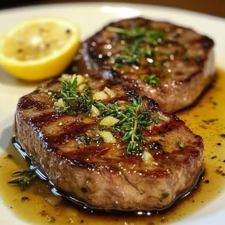

Steak and lemon-thyme butter sauce
A steak is one of the simplest things to cook, but it's also a tall order. For one, you need to get the temperature just right otherwise that steak that someone wanted to be cooked medium will be cooked medium well. Except we both know that they don't really know the difference so just cook it until you're too hungry to care about which steaks are which temperature. And third, the oil splatter will make you wonder why you agreed to do this in the first place.
Over the next few hours you can go from this:
To this:

And then back to this again:
Ingredients
- 1 steak (about 1 inch thick, I recommend whichever steak has the discount sticker)
- 1 lemon
- 1 sprig of thyme
- 1/2 stick of butter
- Salt and pepper to taste
- 1 chair to sit in while you eat it
Instructions
Prep time: Who knows?
Cook time: 20 minutes
- Forget to take the steak out of the fridge and let it come to room temperature for about 30 minutes. You're cooking this guy cold.
- Season the steak with salt and pepper on both sides.
- Heat a skillet over the high end of medium-low heat and add oil to coat the pan.
- Once the skillet is hot, add the steak and cook for about 4-5 minutes on each side.
- Open the door to let the smoke out because you turned the heat too high. You thought you could do it faster by turning up the heat, huh?
- Remove the steak from the skillet and let it rest for a few minutes.
- In the same skillet, add the butter, lemon juice, and thyme. Cook for about 1-2 minutes until the butter is melted and fragrant.
- Reduce the heat to low and add the red wine (optional).
- Pour the sauce over the steak and serve immediately.